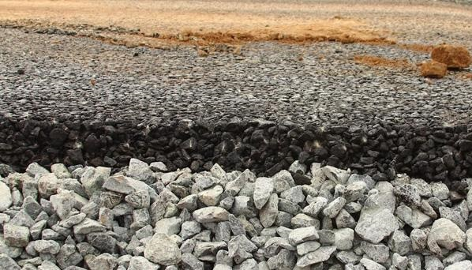
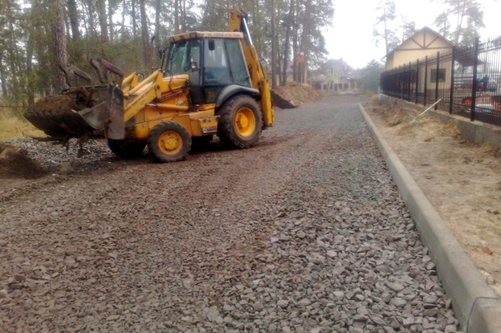
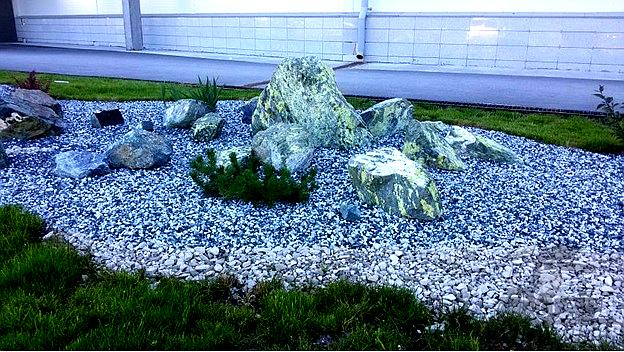
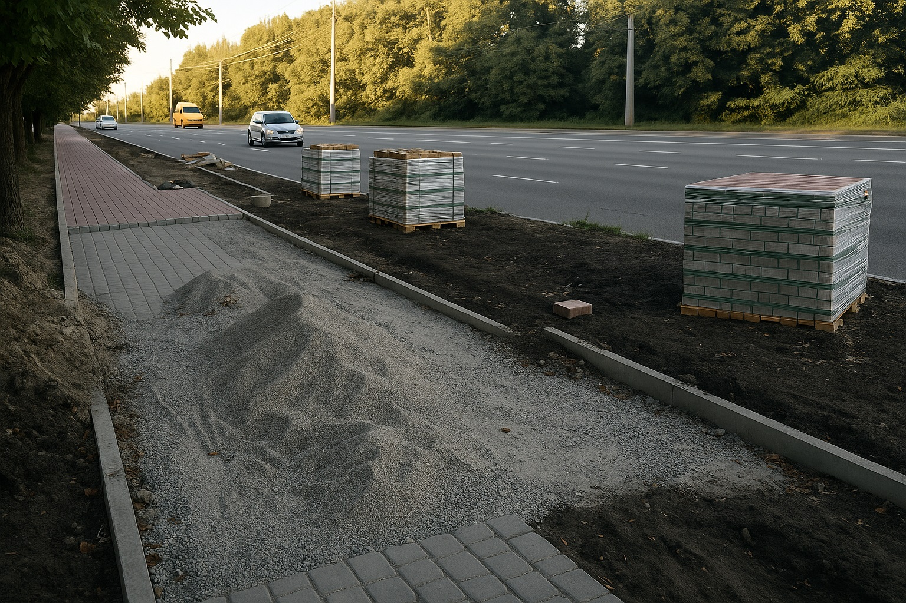

TONNY — ваш надійний постачальник щебеню у Львові
Компанія TONNY — це надійний постачальник гранітного щебеню, піску та відсіву з власних кар’єрів. Ми здійснюємо повний цикл — від видобутку до доставки кінцевому споживачу.
Наші виробничі потужності включають сучасну спецтехніку, контроль якості продукції та сертифікацію відповідно до норм радіаційної безпеки (1-й клас).
Загальна інформація
TONNY — це компанія повного циклу. Маємо власні кар'єри, навантажувальну техніку, залізничний та автомобільний транспорт. Вся продукція відповідає високим стандартам міцності, морозостійкості, екологічності.
Ми продаємо щебінь як на вагу, так і фасовано в мішках.
Сфера застосування
Продукція TONNY широко використовується для:
-
Бетонування, фундаментні роботи


-
Дорожнє будівництво
  -
Дренаж
-
Ландшафтний дизайн
 -
Благоустрій
